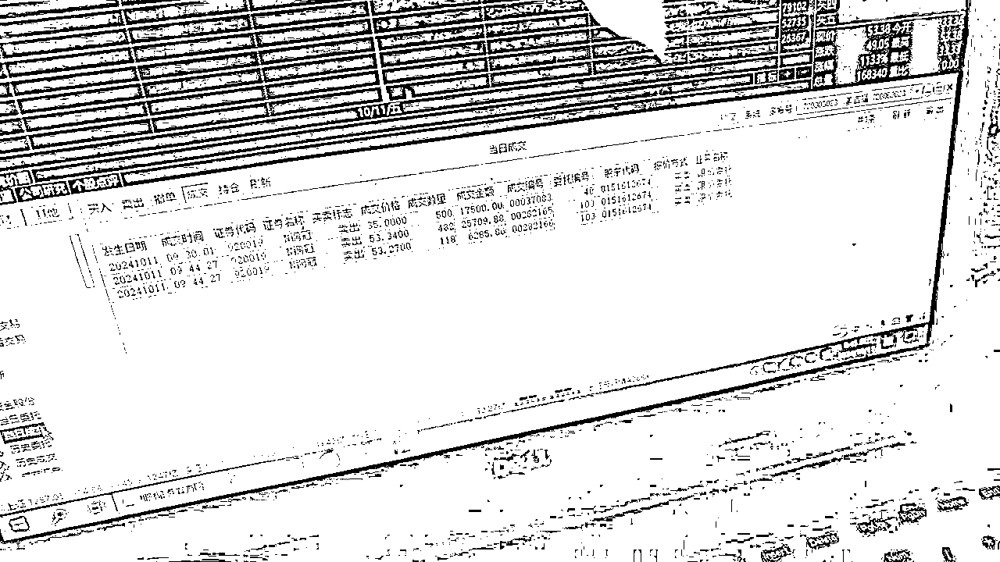

牛市下的北交所：广阔天地 大有可为！浅谈长期坚持后爆发式单日套利30万净收益的过程
来源：https://wiizueiq5ks.feishu.cn/docx/Dcwqd4II7oPxN4xi27ScdUeRnzb
- 大家好，我是老吴。一个金融和互联网的双重事业从业者。原某商业股份银行的一个网点行长。熟悉金融行业的零售产品业务。17年开始从事副业。我的第一份副业是做股票经纪人。现在也在做。之前虽然是一个金融从业人员，其实收入也就比打工的好那么一些。这些年，买房、买车、装修、家庭开支。真的是钱所剩无几。其实也是过着紧巴巴的。关键银行任务还一直很重。至于我现在的状态，我就不多复述了。
- 最近看到的很多的经济形势严峻的境况下，很多人收入开始下滑，或者失业，甚至断供。在这里，虽然我在创业的经验上不一定能帮上你什么忙，但一份坚持的过程，希望能让你看到在自己熟悉的领域爆发的时刻。
- 一路走来看到了太多的不容易，有的是金子总会发光，有的也是烂泥扶不上墙，金融或者互联网没有你们想的一夜暴富 都是靠时间沉淀的不断累积 不要被外面各种虚伪的繁荣所迷惑。在擅长的行业里深耕，等待的爆发的时刻到来。
- 互联网上虽然有有不少如何赚钱的实操干货，但大部分就是利用赚钱的效应放大流量项目，你当一个老板，都是大家熟悉的0-1，然后不断的在1后面添加几个零而已。
- 打铁要自身硬，过硬的技术和知识，广泛的人脉能力，就是要学会感恩朋友、感谢自己，是多年的沉淀，学会了靠谱、真诚，才让我们在一个个机遇中发现了商机，也有准备迎接挑战的实力
我与北交所的渊源
要赚这个行业的钱，就要开始入市
- 我入市场，是在2015年牛市的时候，整个一轮的牛市下来，我没有从股票上赚到钱，但也没亏钱，但是却从股票打新上赚钱到钱。当时的市场操作逻辑是:谁股票账户上有股票市值，谁就能利用资金去打新股。当时利用银行的信贷资金（直接转入是违规的，但绕一下，银行基本不管），从股市赚了十几万。
- 记得很清楚，当时我朋友中了一只新股，那只新股足足让他赚了10几万，新股的魅力有时候太疯狂了。所以我经常关注新股
- 新股也有破发的时候，但大部分是赚钱的。所以这是一个比较低风险配比的思路。
- 后面做了存款冲量、证券冲量业务，在这行业里碰到了好多在资金套利领域的大拿，也是越分享越幸运，很多业务都是在大家互相分享的过程中，学习了很多知识慢慢成长起来的。北交所领域也是在这个过程中，我逐渐学会了如何打新并在这个领域持续从0-1过程中，学会了1并不断的放大。
北交所底层逻辑的介绍
- 北京证券交易所（简称北交所），它于2021年9月3日注册成立，是经国务院批准设立的我国第一家公司制证券交易所，受中国证监会监督管理。北交所的成立旨在深化新三板改革，支持中小企业创新发展，打造服务创新型中小企业的主阵地。
- 目前，中国几大证券交易所：上海交易所（简称上交所）、深圳交易所（简称深交所）、创业板、科创板、北交所。都是证监会下的正规市场交易板块。
- 北交所打新股流程：有股票账户 → 开通北交所权限 → 新股出来时发行申购 →上市交易→算盈亏
- 目前北交所这块的市场趋势：北交所申购，应该是现阶段低风险理财的重要手段之一，其收益率在现阶段是非常可以的。 其中历史数据可以参考： 1、最近一段时间，40次申购上市，仅1个破发，其余均获利，而且破发也才亏个几百块钱，完全可以接受，后续又涨回来了。2、在市场的牛市加持下，新股涨个10倍以上，不是很难的事情。3、这是一个完全可以放大的项目。因为北交所在我们的测算下，只要合理利用资金，我们完全可以做到百分百中签。这就是一个完全的可以放大的项目。因为存在了确定性。
本人北交所历史参考收益
说明：这仅仅只是部分我们自己能操作账户的可看权限。还有一些账户没打，是户主本人资金有其他用途或者进行适当调配，而进行分仓打新。其实每一只新股，我们按资金比例是能必中的。
项目进程
只要是好项目，什么时候入场都不晚。
- 北交所项目2021年就有了，但中间存在很多新股破发，流动性和关注度差，市场的接纳程度也不高。所以参与时机一般。
- 整体行情好起来是在2023年。而我是2023年底开始踏入这个市场的。期间很多股民都了解那段时间是一段很黑暗的历史时刻，大家谈股色变，大部分的股票都在喋喋不休。后面我因为通过朋友交流发现，打新股确实是很香，毕竟百分百的中间机制，只要合理控制风险，就是稳赚。
差的行情下收益
- 我通过这个市场的套利机制，发现了一个值得去赚取收益的公式。
- 我算过一笔账,就是这算是一个低风险的理财，比如我能调动资金100万，那么平均收益1000元一次，我100万占用2天时间，那么银行贷款成本是180元，纯理财成本是100元，那么我能净赚800-900元。如果我每次放大到10倍，1000万元，那么我每次可以赚10000元左右。一个月平均2次，那么我动动手指头，调动一下资金，就能赚2万块钱。扣掉成本，也能赚18000元。这种利用资金套利打新的方法，简直就是暴利。而且这还是在股市市场环境很差的情况下。
如何去放大这个项目
- 发现了这个好项目，我就从资金一两百万，发展到资金一千多万（利用家族的力量和银行信贷资金，合理分配资金收益），还有收购其他客户的资金进行打新，规模逐步的在放大2千万、3千万甚至上亿等等。每次赚个几万块钱，也是稳稳的幸福。北交所爆发的前夕，在接近一年的时间里，合计也赚了接近20万的利润（中间还北交所断过几个月）。所以所以工作量无非就是40天左右，每天赚5000元，这种套利不香么。
我是如何在坚持中爆发
恭迎牛市启动
我们在2024年9月24日，随着美国降息、东风35导弹试射、国家启动股票回购机制贷款，正式启动牛市。而北交所也随着这波行情的到来，而不断的大幅度上涨。整个北交所的溢价大幅度提升，北交所有低估值、盘子小、科技前沿领域、新股打新资金多等特点，是这轮牛市冲锋最在前面的一个旗手。
一只股票打新，套利赚了30多万
一路坚持不容易，不是一下子就能赚这么多。有时候是一场机遇。
2024年9月底，我也是正常的收购一些新股资金以及家族资金进行打新，股票代码920019铜冠矿建，原来进行测算，我的这只中签的新股，中了43000元左右，预估这只新股赚个两万左右。但随着牛市的轰然启动，我这只上市最高翻了11倍，我平均在8倍多卖了这只股票。没吃到最大的那个红利。所以就赚了43000*8.5=365500元，再扣除预先要分红的利润和成本，大约一天就赚了30万元。这是我非常意外的一个大惊喜。

接下去的爆发机遇
在牛市背景环境下，整个北交所的氛围是处于一个非常亢奋的状态，在整个市场上，不需要关心这只股票是否值得购买，有没有投资价值，只需要关心市场的情绪。而目前北交所，就是最大的情绪宣泄口。所以接下去的超溢价状态，就是很值得去投资的一个市场了。
北交所的优缺点
北交所优点
北交所缺点
- 资金需求不固定，随着牛市行情的到来，打新资金跟着水涨船高，比如最近一只新股，要中签都得160万以上。
- 没有职业投资者的测算，很难精准测算中签概率，盲打的最终结果几乎就是没打中。白白浪费利息。
- 北交所权限开通必须股票账户，要满2年投资者交易经验+日均资产50万（放活期也行），方能开通市场权限。
- 投资者在申购新股时需要全额缴纳申购资金，即申购多少股就需要冻结相应金额的资金。大概2天或者4天无法使用资金。使用时间如下图所示，目前就只展示个别账户
北交所新股必中策略
- 北交所的策略跟A股、深圳股打新完全不一样，是纯资金即可打新的。
- 北交所还有个碎骨概念。合理利用碎股规则卡碎股门槛，即通过精确控制申购资金量来尝试获取额外的100股碎股。分户打新，即利用多个账户进行申购，以提高中签的概率。正股很容易理解，就是按比例分配的100股整数倍股票。但是获配一般都是有零碎的，不可能刚好获配100股，例如210股，435股等。假设你的资金分配了210股，那200股就是正股，然后这个零碎的10股，其实就是碎股。正股直接分配给你，你的碎股会放到碎股池，再二次分配。
- 必中签率预估：大部分的人一般是无脑打新了，不会预测打新资金和中签率，想要中签，无非是浪费资金的使用时间。所以必须要专业人士根据数据投资者可以根据公司发行规模和申购资金的预估来计算中签率，进而预估需要多少资金能够中一签。这就是北交所打新的核心精髓。
- 以下是我的部分中签情况报告。我的每个账户都中签。合作的账户还很多，就不一 一公布了。
打新收益测算
理财及银行资金成本收益之间对比测算
北交所打新占用2天时间来测算，一天的理财利息是1万元5毛钱，100万就是50元，2天100元。2天的信贷资金成本利息大概在200元。
而打新近期行情的收益100万在1500-2000元以上每次。那么理财差距就是15-20倍以上的收益差距。贷款利息差距，就是7-10倍的理财收益差距。
这还是偏保守估计的测算。比如最近的新股，很多都是5倍、10倍的测算。按照我上次中的铜冠矿建来测算，一只打新150万，中400股，一股4.33元，股本1732元，盈利12775.87元，而我付出去的成本仅仅是银行信贷资金成本300元而已。这个收益水平差了42倍。当然，随着市场热度的爆炒，这个打新收益自然会保持，但打新难度会有所上升。
市场收购策略对比
我们要如何去放大这块市场的规模，就是从市场上寻找资金。寻找对这块业务能理解的资金。而且觉得这块是低风险套利的模式，自己省心、安心，又赚的舒心。这种低风险套利的模式，资金在自己股票户里。打新完了，资金可以出来去购买理财或者归还银行，预估好的2天时间一般不影响资金后续使用。收益又高。我们和客户的合作模式一般分成2种模式：1、纯合作模式。2、资金收购模式
纯合作模式
向客户承诺保本，如果中间没中签，赔付理财利息。如果中签了，保证亏损我们补，收益73开。主要客户资金在自己账户里面。因为理财利息，500万也才500元，完全有那个实力赔付。
资金收购模式
市场上很多资金，他是不愿意冒风险新股可能破发的风险。所以就按固定价格卖给我们，资金在自己账户里面。有时候是2天万6，有时候万8，有时候万10。举个例子，你有500万，2天卖我问万10，就是10*500=5000元，而客户的成本仅仅只是1000元。净赚4000元，那么我赚和亏就跟客户没关系了。客户要如数的把盈利归还给我，或者亏损我弥补客户。
那后续能不能拿到钱，就主要是客户看讲不讲信用了。
赚钱的核心逻辑及普通投资者怎么参与
在这个市场，我已经有将近10年的经验，从从业者、到操盘手、到北交所打新放大项目，这些不是一天两天就能学会的，需要从市场理解各种名称的所在含义，所以这就是典型的赚钱就是对认知的补偿，我在这块上有足够的认知，市场行情的到来，就给了我一个非常大的机会。但这个项目想要参与，也是有紧密的方式可以进行操作的。
有资金型和资源型客户
典型的金融从业人员或者有资源型的客户，可以直接寻找资源对这块市场进行蛋糕分配，比如你有资金，100万起，而且能随时调动资金一起打新。那么这块就能咨询我共同参与。这类型的是风险最低，收益最高的群体，我们只要一份知识，多份卖出，就能稳定的获得市场的奖励。
风险投机型客户
如果资金容量不够大的客户，但是自身风险偏好比较高，能承受住一些风险的客户，那么合作的方式就很简单。用小钱去收购别人的大钱。
比如你有几千块或者一万多，就能收购到别人的资金几百万、上千万。但因为我有一套风险风控系数，比如我收购一个亿，已经花了很多万，那么我并不愿意花更多的钱再去收购了。
但市场很大，有一些资金中介把利润空间压缩的比较低的资金方，开的价格会略高。但市场还是存在可能性的情绪溢价。虽然我并没有太大的兴趣进一步收购，主要是因为生意很长，没必要愿意冒很大的风险。所以把风险系数和赚钱分摊在不同的打新股上面。
而我们的圈子里面有大量的资金型客户，所以这块收购的空间还是有的，毕竟还是有很多的信息差客户，他们有的人也看不懂这块的逻辑，他们就想着安安稳稳拿到前期的钱。
这块投机参与的风险和收益，我觉得整体上比炒股来的强。
总结一下，赚钱的逻辑就是：资金收购资金---上市后卖出---资金方归还盈利---计算盈亏---按约定分成。
我们的优势所在
- 风险防范机制，有资金的客户合作，所有的风险端全在我们，全程兜底风险。
- 风险投机资金收购模式，我们的专业知识能测算单只新股的可能性收益和最大风险系数亏损。给予一套完整的方案。
- 降低这个项目放大的阻力，进行快速在大牛市行情背景下，如何获得客户，如何赚到这笔钱。进行风险最低控制，我们均有十足的经验。
- 谈钱不伤感情，一起赚钱增进感情。在确定性的项目下，全力往前冲。无需畏惧。有时候上天给了碗饭吃，就要牢牢把握住。而我，就是这个能当领头的头狼。
结语
自古驱民在信诚，一言为重百金轻。今人未可非商鞅，商鞅能令政必行。
在金融行业，诚信比金子贵，我能在这个行业里不断做大做强，从资金一百多万，到一个多亿的规模，靠的就是履行诚信原则，加强自身的专业知识和对市场的理解外，及时的分配好相关的利益，甚至让点利，是对我们合作伙伴最好的承诺，这是一个谈钱不伤感情的平台，希望能链接有识之士，一起一言为重百金轻。